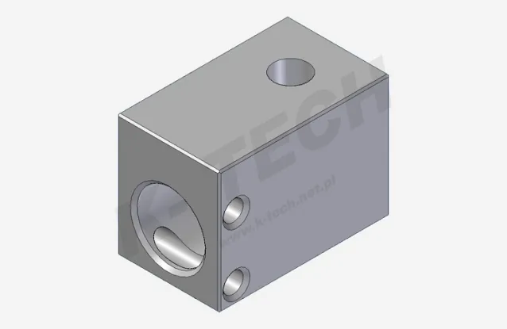
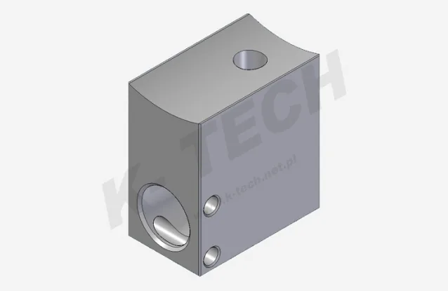
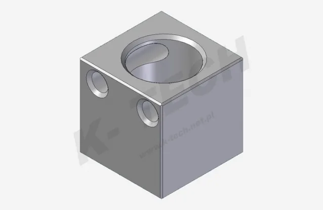

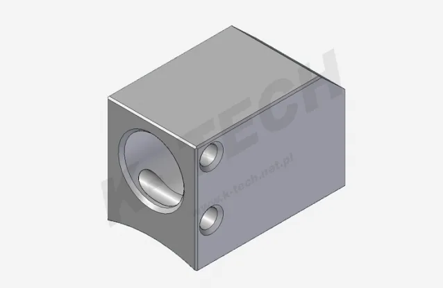
Kostki i przyłącza STECKO
Produkcja seryjna DN10 i DN12: kostki proste, niskie i wysokie kątowe, frezowane, zabezpieczające.
Obróbka CNC w Żorach: kostki STECKO, tłoki, dławice, uszczelnienia i części obudów zmechanizowanych. Seryjnie albo według Państwa rysunku.
Wyślij rysunek do wycenyPięć obszarów, w których pracujemy na co dzień. Każdy wyrób z katalogu możemy wykonać w serii albo zmienić pod Państwa wymiary.




Produkcja seryjna DN10 i DN12: kostki proste, niskie i wysokie kątowe, frezowane, zabezpieczające.
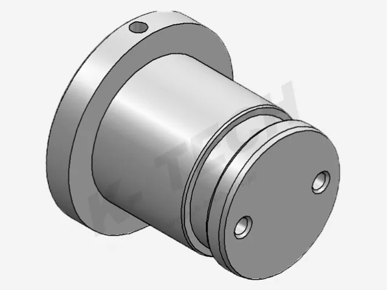

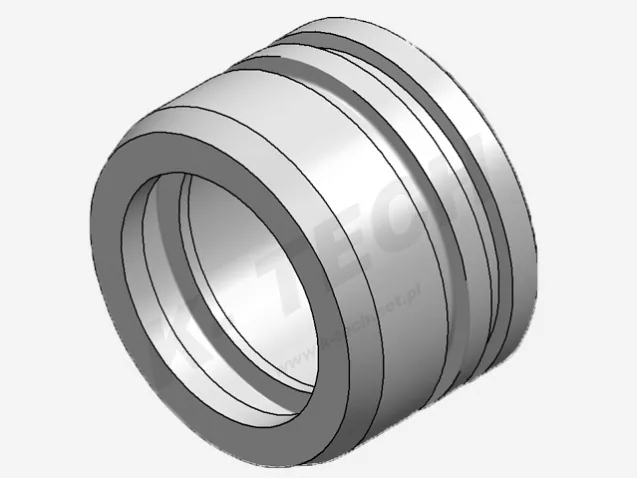
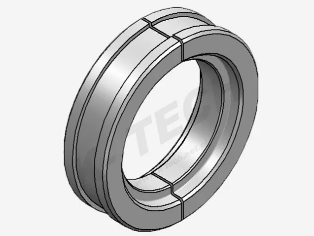

Tłoki, dławice, tłoczyska i pierścienie dzielone do hydrauliki siłowej, z gwintami i rowkami pod uszczelnienia.
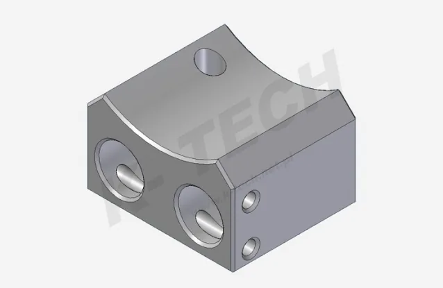


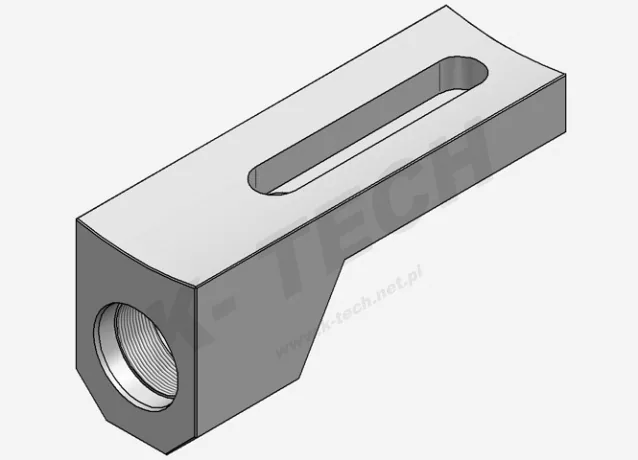
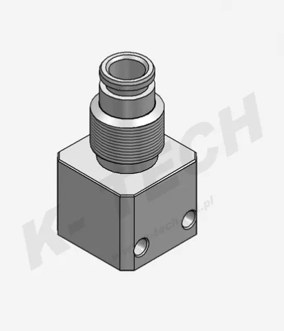
Listwy przyłączeniowe, przyłącza stopniowe, specjalne i wkrętne, gniazda zaworów upustowych, sprzęgła, nakładki.
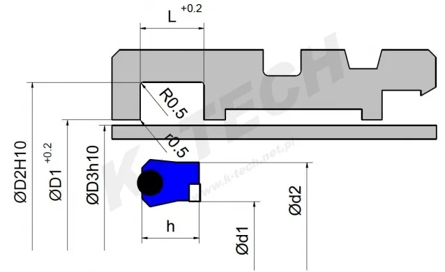
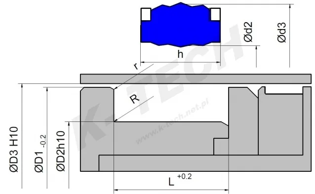


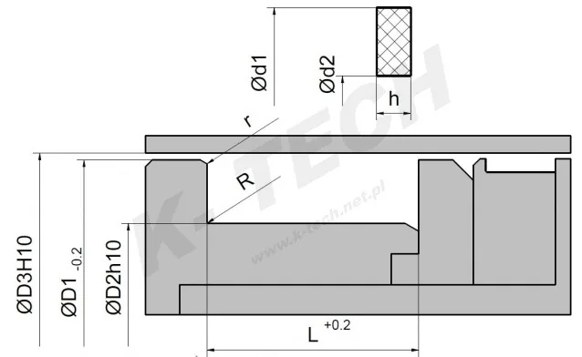
Uszczelnienia tłoka DS, DSn, DZ, tłoczyska JSn, pierścienie oporowe PO i zgarniające PZ, uszczelki poliamidowe UP.
Modele i tabele wymiarów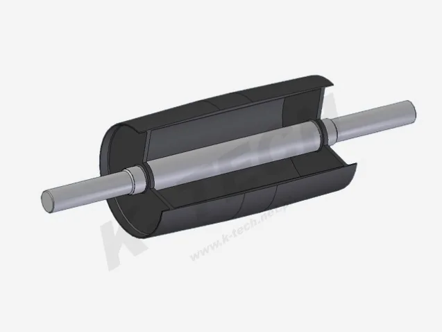

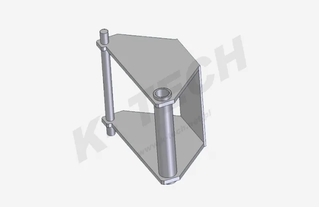
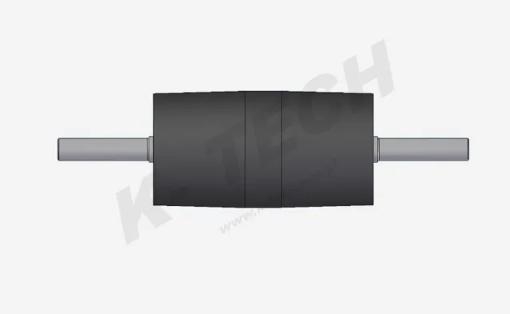
Bębny zwrotne, konstrukcje spawane MIG, ślusarstwo oraz produkcja i remont części obudów zmechanizowanych.

Pięć obrabiarek CNC i zaplecze konwencjonalne. Po zakresach osi od razu widać, czy Państwa detal zmieści się na naszych maszynach.
Do tego tokarki uniwersalne, frezarki konwencjonalne i spawarki MIG.
Fragment katalogu. Pełne karty z tabelami wymiarów zostają na podstronach, jak dziś.

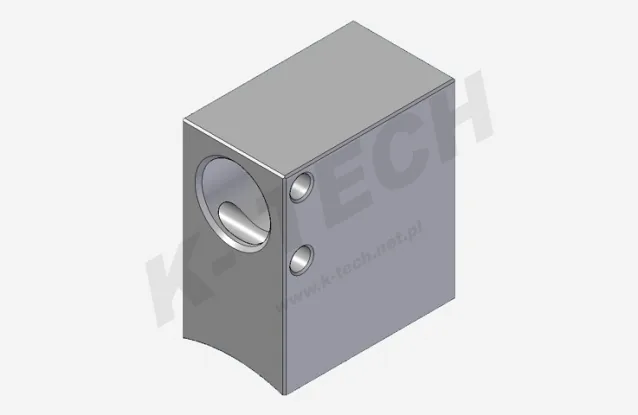
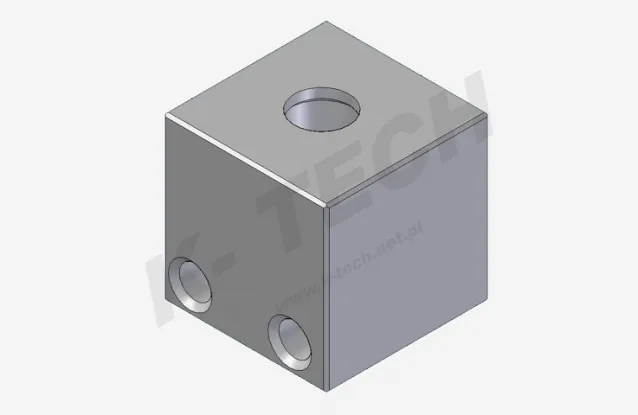
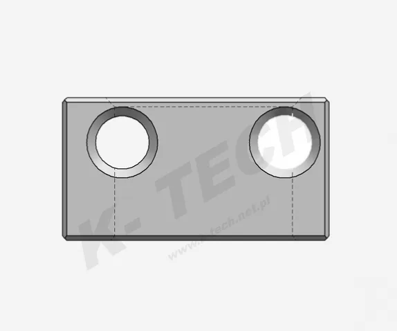


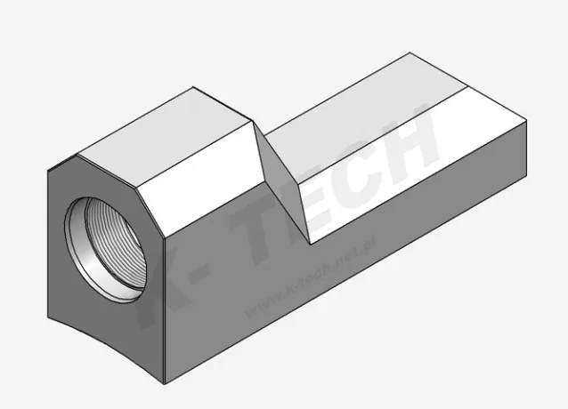
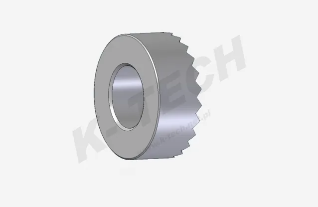

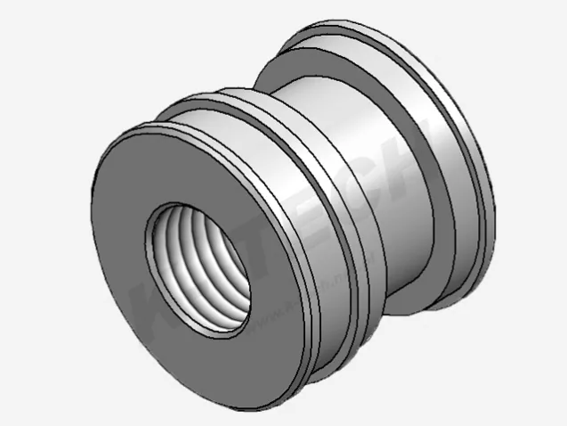
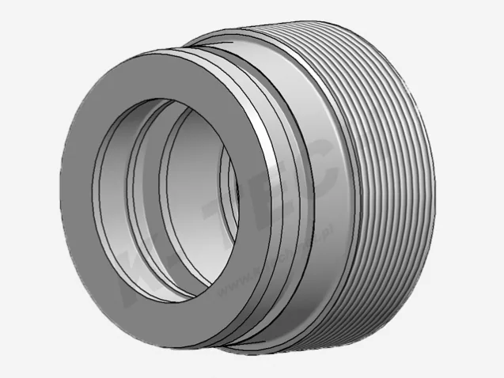

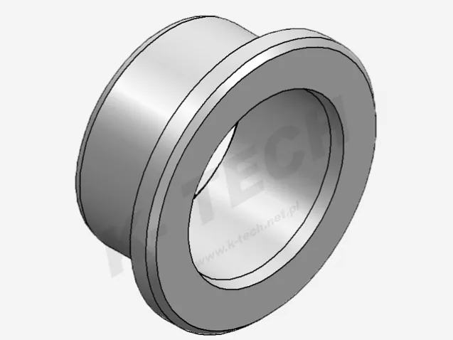

Najszybciej wycenimy detal, gdy dostaniemy rysunek, ilość i materiał.
Stali klienci zamawiają przez konto w panelu zamówień. Konta zakładamy na podstawie umowy. Panel zamówień
Przedsiębiorstwo Wielobranżowe K-TECH Krzysztof Fojcik
ul. Boczna 8, 44-240 Żory
663 005 555 tel. 32 750 12 95 · fax 32 750 12 96 biuro@k-tech.net.pl
Zajmujemy się obróbką skrawaniem na obrabiarkach CNC i uniwersalnych, produkcją elementów hydrauliki siłowej i sterowniczej, produkcją i remontem części obudów zmechanizowanych oraz ślusarstwem i spawalnictwem.